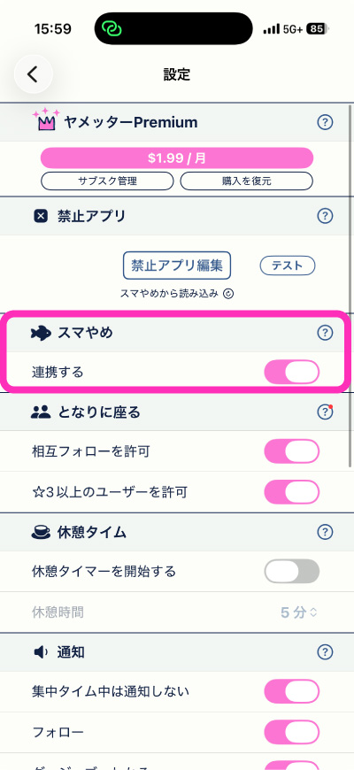
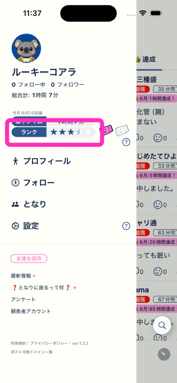
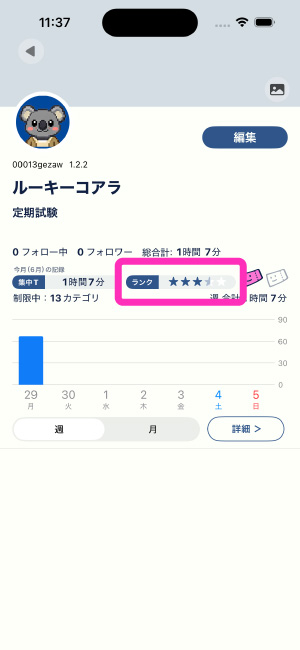
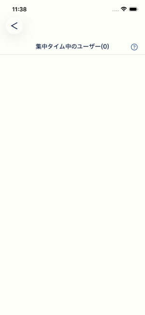

點選側邊選單的「旁邊」

這裡顯示了可「坐在旁邊」、且剩餘專注時間在20分鐘以上的使用者列表。請試著點選看起來屬性相近的使用者圖示。

進入個人檔案頁面後，會顯示「坐在旁邊」按鈕，請點選。

按下「靜靜入座」按鈕後，會播放入座動畫，之後請決定「標籤」和「時間」，啟動計時器。


完成「坐在旁邊」的專注時間後，可以獲得貼文編輯券。這個券是用於日後編輯貼文的道具。

使用說明目錄
這款App是由日本人開發的。若有不自然的翻譯或任何問題，歡迎與我們聯絡。語言不限，什麼都OK。
yamettersp@gmail.com
在自習室裡，旁邊有人坐下時會稍微緊張，不知為何反而能集中。這款App重現了那種感覺。
點選側邊選單的「旁邊」
這裡顯示了可「坐在旁邊」、且剩餘專注時間在20分鐘以上的使用者列表。請試著點選看起來屬性相近的使用者圖示。
進入個人檔案頁面後，會顯示「坐在旁邊」按鈕，請點選。
按下「靜靜入座」按鈕後，會播放入座動畫，之後請決定「標籤」和「時間」，啟動計時器。
完成「坐在旁邊」的專注時間後，可以獲得貼文編輯券。這個券是用於日後編輯貼文的道具。
這是字面意義上最初一個人專注的模式。從「夥伴搜尋」下方的「單人專注」開始。

開始「單人專注」後，您會出現在「專注中的使用者」列表中。也就是說，您將成為被坐在旁邊的一方。標籤和個人檔案越具體，屬性相近的使用者坐在您旁邊的機率就越高。
被坐在旁邊時，會收到「XXX坐在了您旁邊」的通知。

打開App後，畫面上方會顯示坐在旁邊的使用者的圖示、計時器和標籤。同樣地，對方也能看到您的狀況。完成和中斷也會傳達給對方。個人檔案在計時器結束前無法查看。

如果真的想要獨自專注，請在「設定」的「坐在旁邊」中將所有開關設為OFF。這樣就沒有人能坐在您旁邊了。只關閉「允許☆3以上的使用者」，則只有互相追蹤的使用者能坐在您旁邊。

但連動中，若其中一個計時器正在運作，另一個計時器就無法啟動。可在設定中關閉連動。

側邊選單和個人檔案中顯示的☆數量就是等級。完成2小時的專注時間☆+1，中斷☆-1，最多☆5。每月1日重設為☆0。


等級的差異
☆0〜2：坐在旁邊僅限互相追蹤的使用者
未達☆3時，只顯示互相追蹤的使用者，因此有時不會顯示任何人。

☆3：可與全體使用者坐在旁邊
可以和非互相追蹤的使用者坐在旁邊了。
☆5：可在貼文中附加圖片
可以在一般貼文中附加圖片。
月初請透過「夥伴搜尋」和「單人專注」努力達到☆3吧。
大多數情況下，以下操作可以解決問題。
1. 重新選擇封鎖App
請在戒特內先解除所有封鎖App的選擇，再重新選擇並儲存。這樣會分配新的識別資訊，可解決大多數情況。
2. 重新啟動iPhone
關機後再開機，與iOS的連動將重新建立。
3. 重新設定螢幕使用時間限制
設定 → App → 戒特 → 將螢幕使用時間的限制關閉，然後再次開啟。開啟後若立即要求許可，請選擇「允許」。
4. 將iOS更新至最新版本
此問題在更新iOS後可能會改善。
詳細說明
戒特的App封鎖功能是利用Apple的「螢幕使用時間」（Screen Time API）實現的。因此，它依賴iOS端的狀態，而非應用程式本身。在更新iOS後等情況下，iOS傳遞給應用程式的「封鎖目標App識別資訊（Token）」可能發生偏移，導致選擇的App無法被封鎖。這是iOS端的已知問題，包括我在內的多名開發者已向Apple回報，但目前仍未修正。
今後也會持續追加常見問題的說明。歡迎在問卷留言欄或直接回覆開發者提問。大部分項目都設有(？)按鈕，也請一併參閱。